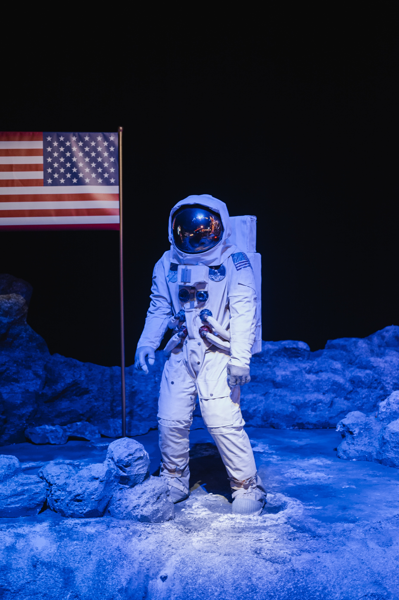
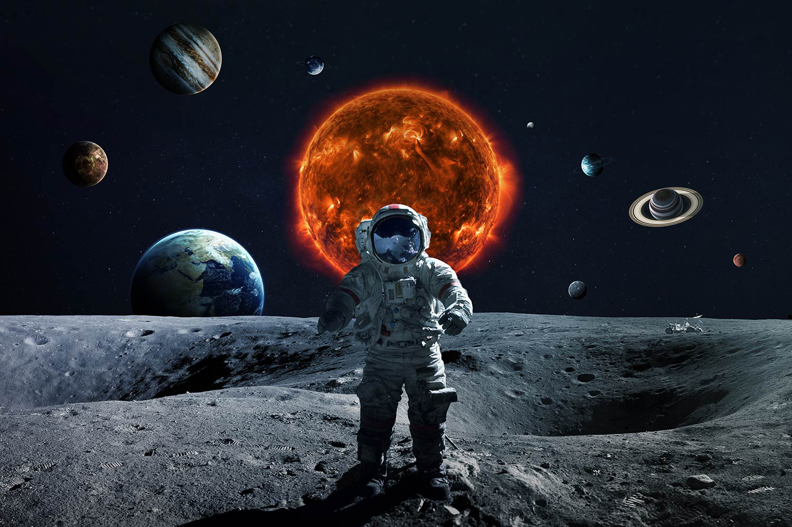

 
Man On The Moon
Twelve people have walked on Earth's Moon. The first one was Neil Armstrong and the last one was Harrison Schmitt. All crewed moon landings took place between July 1969 and December 1972 as part of the United States Apollo program. All twelve people who have walked on the Moon are American men. Armstrong had left the US Navy and was already a NASA employee when he and Elliot See became the first civilian astronauts in Astronaut Group 2. Americans alive at the time remember it as the night of July 20, 1969 (Armstrong set foot on the Moon at 10:56 p.m. Eastern Daylight Time), but it was the 21st in UTC.Some Of The First
- Neil Armstrong
- Buzz Aldrin
- James Irwin
- MoonPeople